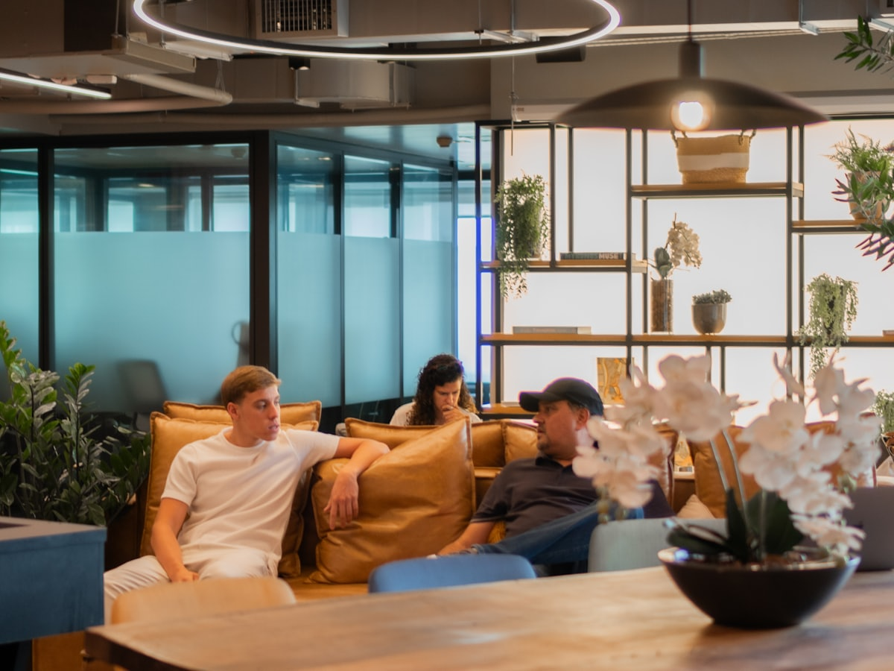

The deeper you go, the more it gives back.
Every feature exists so your next interaction is better than your last.
Your context, always there.
Tell it once. Ask about it next month. It's there.
Postgres-backed memory with semantic search. Every conversation, every preference, every decision — stored permanently and recalled across sessions. No re-prompting, no context windows. Your history is always available.
Your credentials, never exposed.
Add an API key once. Luna uses it forever — encrypted, scoped, invisible to the LLM.
Per-tenant encrypted vault. Your secrets are stored with envelope encryption, scoped per service, and injected at execution time. The language model never sees the raw value — only the tool runner does.
Your trust, enforced by architecture.
Not "it was told to ask." The execution engine stops and waits for you.
The execution engine pauses at approval gates. Four options: yes this time, yes today, yes forever, no. Every decision logged, every standing approval revocable. The LLM cannot bypass the gate — it's a hard architectural boundary.
Your needs, never out of reach.
20+ plugins today. Luna builds new ones when it hits a wall.
Plugin ecosystem with SDK and MCP adapter. Browse the catalog, install with one click, or let Luna write a plugin for itself when it encounters something it can't do yet. Every plugin versioned and rollback-able.
Your ideas, actually built.
Scripts, websites, automations — written, executed, delivered. Not just suggested.
Full sandboxed code execution. Luna doesn't just write code — it runs it, tests it, and delivers the result. Scripts, data transformations, web scrapers, automations — built and deployed in an isolated environment.
Your conversations, everywhere.
Ask on Slack. Check on web. Continue on WhatsApp. Same context, always.
Multi-channel support with unified context. Start a conversation on one platform, continue on another. Your memory, preferences, and conversation history follow you across every channel.

Your agent, getting sharper.
Learns from corrections. Proposes improvements. Every change versioned and reversible.
Three-layer self-improvement. Luna reviews its own work, notices what failed, and proposes fixes — to its own prompts, its own tools, its own behavior. Every self-modification is versioned. One-click rollback.
Your costs, visible.
Per-conversation breakdown. Optimization suggestions. No surprises.
Cost tracking per action. See exactly what each conversation costs, broken down by model, tool use, and storage. Get optimization suggestions and set budget alerts. Full transparency, always.
Your data, portable.
Clone it. Export it. Fork it. It's a Postgres dump — yours forever.
Clone, export, or fork your entire agent — memory, plugins, configuration, conversation history. It's a standard Postgres dump. Take it anywhere, run it yourself. Your data is portable because that's how open tools should work.